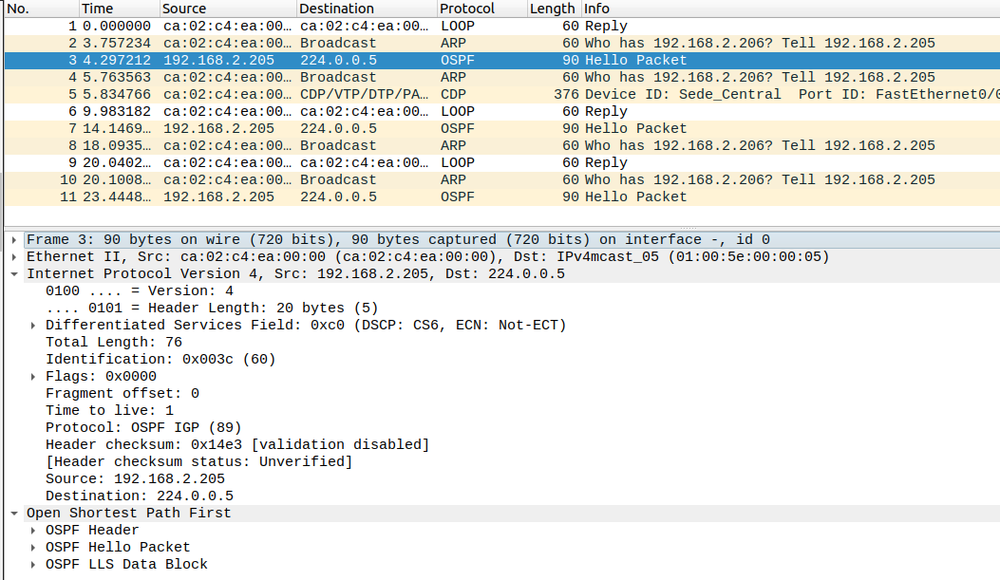
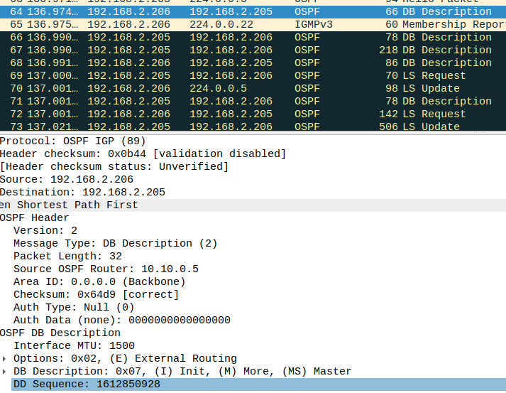
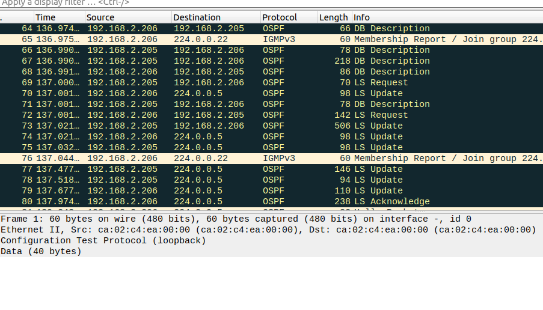
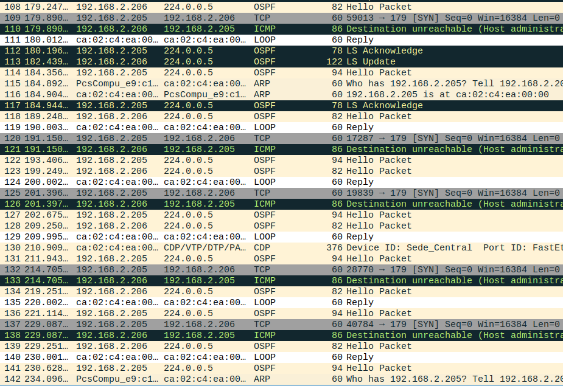
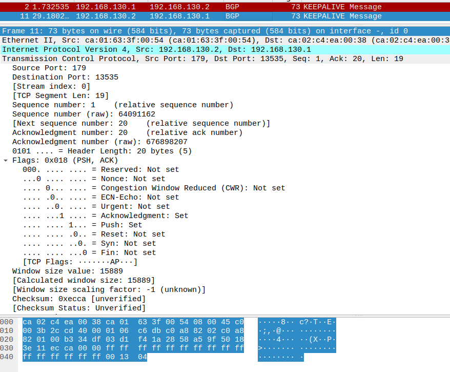

Universidad Nacional de Ingeniería
Facultad de Ciencias
Escuela Profesional de Ciencias de la Computación
Administración de Redes
Proyecto Capstone: Internetworking
Una de las principales tareas que como administradores debemos
realizar es velar por el óptimo funcionamiento de la red en nuestra organización,
y porque no, a nivel personal, ya que de este factor dependen muchos procesos y
productividad de los usuarios. Una red lenta o con fallos es sinónimo que algo
anda mal y por ende los usuarios y equipos del dominio no tendrán la misma velocidad
para realizar sus actividades diarias y por esto se verán afectados muchos elementos
internos y externos.
La monitorización es importante para ser conscientes de lo que ocurre en nuestro
sistema y podemos así identificar modificaciones que ocurran en tiempo real o a
lo largo del tiempo. En este caso buscamos herramientas que nos permitan hacer
un monitoreo de servidores, servicios y redes mejorando así nuestra administración del sistema.
Monitorización de la red de Sede Central con Firewall 1
paquetes Hello de OSPF
paquetes DB descripcion de OSPF
Paquetes OSPF
Paquetes que no deja pasar el firewall
Monitorizacion de la red de Sede Central a Sede Trujillo WAN
